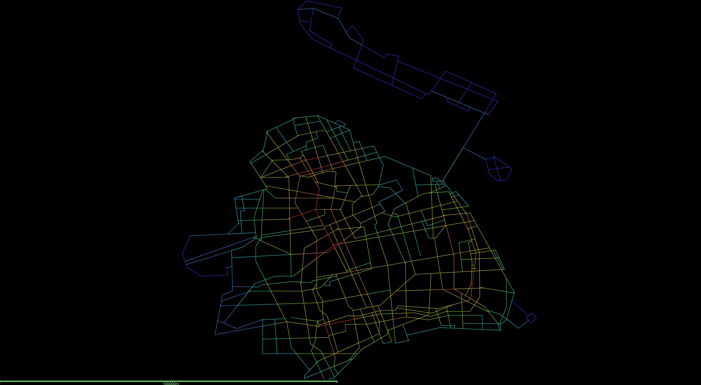

i
品牌维度
Brand Index
MHIi = α · Anew + (1−α) · Jaccard
以惠特克（Robert Whittaker）α/β/γ 多样性框架为骨架，把品牌集合的差异度刻画为「相对全样本基线的可比指标」，让 80 家商场可以在同一刻度上排序。
从 80 个商场样本与 13 个高端商场子集出发，以品牌、业态与楼层模板三个相互独立的维度，重新打开「商场看上去越来越像」这一直觉判断，并以前滩太古里为锚点，观察异质性是否仍然可能。
「商场越来越像」是一句直觉判断，并不是一个可计算命题。要把这句话变成可以被反驳的研究，需要先把「相像」拆成三个不在同一层级的问题：相像于品牌组合，相像于业态填充，还是相像于楼层模板。
以惠特克（Robert Whittaker）α/β/γ 多样性框架为骨架，把品牌集合的差异度刻画为「相对全样本基线的可比指标」，让 80 家商场可以在同一刻度上排序。
把每家商场的业态构成投射为高维向量，并以余弦相似度量度它与全样本平均的偏离，从而把「比例的同质化」与品牌层的同质化区分开。
把每家商场抽象为「下沉层、入口层、中层、目的地层」四级模板上的业态分布，再以沃瑟斯坦（Wasserstein-1）距离逐对衡量楼层节奏的差异，最终构成 80×80 的距离矩阵 D。
三个维度彼此并列，不能压缩成一个标量。如果一家商场的品牌池与同侪重合，它在 MHIi 上得分较低；如果它的业态比例与全样本均值重合，它在 MHIf 上得分较低；如果它的楼层节奏与其他商场重合，它在 D 上与其他点紧贴。这三种「相像」并不互相蕴含，因此本研究保留三个独立读数，让证据本身说话。
以惠特克框架的相对多样性逻辑出发，把 80 家商场的品牌集合放在同一基线上读数。MHIi 越接近 1，意味着该商场的品牌组合越偏离全样本基线，越具识别度；越接近 0，意味着它的品牌池正在向上海高端商场的「公共底版」收敛。
把 80 个样本沿 MHIi 排序后，得分最低的 13 个商场构成「高端同质化俱乐部」。它们共享同一批奢侈品、轻奢与设计师品牌池，使得品牌维度上的差异度不足以将它们彼此区分。这并不意味着它们已经互相替代，而是说明：单纯依赖品牌清单已经不足以解释「商场为什么仍然各自有人去」。
把 80 个样本里的品牌名一一拆开数频次，可以更直观地理解上面的散点为什么会向左下角收敛：少数几个连锁品牌几乎渗透全市。星巴克出现在 59 家商场里，霸王茶姬 42 家，瑞幸、星巴克、必胜客这些「公共底版」品牌的存在本身就拉高了任意两家商场的 Jaccard 重合度。
这一观察构成本研究后续章节的边界：既然 80 个样本里只剩 13 个在品牌层值得比较，那么余下两个维度的子矩阵分析就有了清晰的对象。下一章先以十三维业态向量审视填充比例的趋同程度，再进入楼层模板的距离结构。
品牌池可能完全重合，业态比例却未必同步。把每家商场的业态构成投射为多维向量，再以余弦相似度逐对衡量，可以独立于品牌层观察「填充节奏」这条线索是否也在收敛。
从奢侈时装、轻奢设计师、美妆护肤、珠宝钟表、鞋包、精致正餐、咖啡茶饮、生活方式、运动健身、数码体验、艺术文创、服务超市到亲子儿童，每家商场在这十三类业态上的品牌占比构成一支十三维向量 vi。两个向量越接近，余弦相似度 cos(vi, vj) 越接近 1；越偏离，越接近 0。这条度量与品牌池本身完全无关，因而可以在品牌层之外提供独立证据。
V3 在视觉上回答两个问题：高端 13 家是否在业态层也已经聚拢为一团？前滩太古里在这一层是否仍然处在偏离主集群的位置？热力图给出的回答是「大体聚拢、局部偏离」。十三家两两相似度中位数已经在 0.85 以上，几乎所有商场都共享同一套以奢侈、轻奢、餐饮、生活方式为重心的填充结构；前滩与兴业太古汇之间高达 0.98 的相似度，提示「同一开发主体」在业态层的近乎复刻。然而恒隆广场与 K11 之间的 0.50、与嘉里不夜城之间的 0.49，又说明这条度量并未完全饱和：定位极化的商场仍在业态层留下了可读的差异。
把品牌层与业态层的两条标度做平均，得到一个综合的「复合 MHI 指数 H」，可以一眼读出全 80 家在两层叠加意义下的同质化排名。下面这张可切换排名图把 H 摊开做横向柱状图，并允许按消费定位档位切换 6 个子集查看。
下一章把目光转向楼层模板，看看这条尚未饱和的差异是否能在垂直维度上被进一步识别。
把每家商场的实际楼层映射到「下沉层、入口层、中层、目的地层」四级模板上，并按品类构造一份四行 × N 列的概率矩阵 Pi。两家商场之间的差异，就化为四级模板上业态累积分布的沃瑟斯坦距离之加权和。
相比单纯计算「楼层数差异」或「品类比例差异」，沃瑟斯坦距离对「错位」尤其敏感：一家商场把奢侈品放在入口层与一家把奢侈品放在中层之间的差异，会被这一指标显著放大，而不会被简单的比例差异平均掉。
在 80 个商场之间，上述流程生成 80 × 80 的距离矩阵 D；在 13 个高端商场之间，它进一步收束为 13 × 13 的子矩阵 DH。后者就是下一节那张散点图所投影的对象。
对 13×13 的距离子矩阵 DH 执行多维尺度分析（MDS），将每家高端商场嵌入二维平面，使欧氏距离尽量保留原始 DH 中的差异结构。本 demo 使用示意坐标演示交互形态。
即便在品牌池高度重合的 13 个商场之间，楼层模板维度仍然给出了清晰的分组：主集群由陆家嘴、徐家汇、静安南京西路一线的竖向购物中心构成，它们共享相近的「奢侈品上楼、餐饮在顶」节奏；前滩太古里以开放街区把高端业态由竖向重新铺陈到水平横向，在 MDS 平面上向右下方拉出一段明显的距离。
这一结果支撑了本研究的核心论断：在品牌池高度趋同的当下，楼层模板成为真正定义高端商场个性的剩余空间，而前滩太古里以此为基础重新提出了一种异质性方案。指标层面的结论到此完成；接下来两章把这一论断放回上海的街网与剖面，验证它是否仍然成立。
指标只能告诉我们「相像」与「不像」，无法告诉我们「为什么前滩太古里和其余高端商场不像」。把 13 家高端商场放回上海的街网拓扑里，借助空间设计网络分析（sDNA）的通达性测度，可以把视觉上的离群转译为可解释的区位逻辑。
陆家嘴、徐家汇与南京西路一线的高端商场共享相近的轨交节点密度、人行可达半径与街网整合度，它们的楼层模板在 MDS 平面上聚成主集群，并非偶然。前滩位于黄浦江南岸的新生岸线区段，其街网拓扑、地块尺度与步行体验，并不属于主集群所处的城市纹理。
若 sDNA 测度显示前滩位于一个与主集群差异显著的通达性带，那么 MDS 平面上的离群就有了城市学解释：前滩的楼层模板不是被「设计得不同」，而是被「街网拓扑允许变得不同」。这一解释把可视化数据与城市形态学连接到一起。
整合度分析及标点.png）把经度、纬度直接当作 XY 投在 1647 × 1223 的画布上，长宽比 1.35；但上海真实地理比例是 0.6（南北 133 km、东西 81 km），原图把南北方向压缩了约 2.2 倍。本图改用 d3.geoMercator 等角投影 + fitSize 自适应，恢复真实比例，并叠加上海 16 区行政边界作底图。

整合度.eps（depthmapX 0.27 输出），未做 Mercator 校正，南北方向被压扁约 2.2 倍。要做正交版本需要：(1) 把路网先转为 EPSG:3857 (Web Mercator) 或 EPSG:32651 (UTM 51N) 再导入 depthmap，或 (2) 用 sDNA / spatial syntax 的 Python 实现重算后用 d3 重渲染。当前版本已足够作为"整合度结构"的可读证据，但精确分析需要这一校正。
前滩太古里与兴业太古汇同属太古地产，品牌池高度重合，地理位置与街网拓扑却各居黄浦江两岸。把两者并置阅读，可以把「品牌相同、模板不同」这一论断落到具体的剖面与平面上。
这一并置揭示出：在品牌相同、业态相近时，楼层模板的差异更接近城市形态意义上的差异，而装修风格只是这一差异在表层的痕迹。前滩以横向街区把竖向逻辑彻底改写，使「高端商场」这一类型在上海获得了一种新的空间可能性。
品牌池、业态比例、楼层模板这三层并不彼此蕴含，因此「同质化」从来不是单一命题。把三层读数合起来，我们可以更精确地说明：上海高端商场的趋同只发生在前两层，而真正划分识别度的剩余空间，仍然位于楼层模板与城市形态之间。
第一层告诉我们：80 个样本中只剩 13 家在品牌层值得相互比较；第二层告诉我们：这 13 家在业态填充上同样高度趋近；第三层告诉我们：即便如此，楼层模板仍能把前滩太古里从主集群中清晰区分出来。三层结果叠加之后，「千店一面」就从一句直觉判断改写成一份具体的诊断：同质化发生在哪一层、不发生在哪一层。
这一论断也意味着：以指标对比为目的的同质化讨论，应当先确定「在哪一层比较」。把三层并起来取均值，会把真正具有解释力的差异平均掉，最终得到一个看似全面、实则什么也没说清楚的结论。
把三层指标的公式、样本筛选规则、数据来源与待补环节集中放在最后一章，便于读者按图索骥地复现本研究的每一步。本节为占位骨架，待真实数据接入后逐项补全。
全样本 n=80 取自上海中心城区运营满 24 个月以上、营业面积 ≥ 4 万 m² 的购物中心；高端子集 n=13 由 MHIi 排序后取前 13 家自动生成，与「招商档位」标签解耦，避免循环论证。锚点 n=1 固定为前滩太古里，对照点 n=1 固定为兴业太古汇。
品牌清单 · 赢商网、商场官方品牌目录 · 截至 2026-04
业态分类 · 商业地产研究院八大类目体系
楼层结构 · 现场踏勘 + 商场官方平面图
街网与可达性 · OpenStreetMap 2026 春季快照 + sDNA 0.6